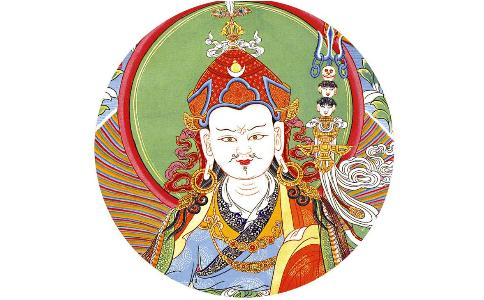

公元八世纪，
据多罗那他于1610年所著《莲花生传》所载，约于摩揭陀国天护王时出生于乌仗那王族。一说系乌仗那英迪拉菩提（印度金刚乘始祖，著有《秘密集会》）之子。初名莲花光明，后通晓声明及各种明处，得名莲花金刚。旋又依
莲花生大士被认为是藏传佛教初兴之时的大阿阇黎，开创了藏传佛教。藏人非常敬爱莲花生大士，因此称他为“咕噜仁波切”，意为“宝上师”或“珍贵的上师”，或有时称他为“白玛卡拉”或“白玛炯涅”。莲花生大士也被称为“莲花生大师（莲师）”。在藏王赤松德赞去世后，莲花生大士骑着光线离开西藏，前往罗刹国调化罗刹众生。莲花生大士在西藏待了多久，有几种不同的
在藏地雪域，旧派（宁玛巴）、新派（噶当、格鲁、萨迦等）的持教大德，多数是莲化生大士的
第二世达赖
对于莲花生大士，我们不能看成是一个普通人。而现在有些人，只把莲师视为对藏地贡献较大的一位瑜伽士，这是非常不对的。莲师真的跟
莲花生大士并非只是藏传佛教承认，其实显宗经典中也有明确授记。藏文的《
这是显宗经典里讲的，不是密宗续部所言，密宗续部介绍莲师生平的非常多，但有些显宗习气重的人不一定承认。此外，显宗的《秘密不可思议经》中也说：“贤劫三世佛，奇妙幻化身，稀有莲蕊中，现为持明者。”贤劫诸佛的奇妙幻化身，在稀有的莲蕊中，化现为持明者形象，毫无疑问，这持明者就是莲花生大士。这些授记，任何比较公正的智者看了，都不得不生
当然，莲花生大士的功德，并不是依靠几个教证来说明就可以了，其实看看他的事业，就可以判断他是不是诸佛
到目前为止，藏地全民信教的传统，跟其他任何地方都不同，甚至国内外很多
莲花生大士为了普度众生，具有八种变相，此又称莲师八变。
（一）海生金刚（Guru Orgyen Dorje Chang）：最初，阿弥陀佛心间的“舍”字，投射到邬金达那够夏大海的莲花上，莲蕊中诞生了一位八岁童子。邬金国王恩札布德膝下无子，因其乐善好施，不时供养三宝，故国库空虚，于是到大海里取宝。在回程途中，大臣紫那木扎首先见到莲师，接着国王也见到了，对其生起极大信心，迎请到宫中作为太子，赐名“海生金刚”。
（二）忿怒金刚（Guru Dorje Drolo）：莲师降伏了奸臣之子，国王将其流放到尸陀林。他在不同的尸陀林中，为有缘的人与非人宣说了种种殊胜法门；对
（三）释迦狮子（Guru Shakya Sengeyi）：在印度金刚座，莲师示现种种
（四）爱慧莲师（Guru Loden Chokse）：莲师于西日桑哈、桑吉桑瓦（佛密）等诸多上师面前，得受了以大圆满为主的众多显密教授。他听闻任何一部经典和续部，都能了如指掌、通达无碍，故叫做罗丹确哲，汉译为“爱慧”。
（五）班玛托创匝（Guru Padmasambhava）：莲师在萨霍国示现种种神变，国王不承认他的成就相，命人堆积木柴焚烧他。结果烈火变成了湖，木柴变成了莲花，莲师端坐在莲花上，颈上挂着骨鬘以作庄严，没有受到丝毫损伤，此时叫班玛托创匝。托创匝即颅鬘妙力之义，指莲师用骷髅鬘装饰身体。
（六）莲花王（Guru Pema Gyalpo）：萨霍国王和大臣们对莲师生起极大信心，请他担任国师十三年，并从国库里取出珍贵的衣饰、莲花帽等作供养。莲师戴着莲花帽，这时叫班玛加波，即莲花王。
（七）日光莲师（Guru Nyima Oser）：在格拉佐尸陀林，莲师示现种种禁行，给空行母们传授密续法门，并降伏了一些鬼神。对其宣说诸多妙法，在日光上显示各种神变，故叫革日宁玛沃热，即日光莲师。
（八）狮吼莲师（Guru Senge Dradog）：在印度金刚座，莲师于辩论中击败了五百邪见外道，并依靠咒术的威力降伏了他们，使外道们屈服并皈入
嗡啊吽 班则儿格热巴玛色德吽
Om Ah Hum VaJra Guru Pedma Siddhi Hum
注：“则儿”连读
大士7句祈祷文
吽
邬金刹土西北隅
莲花蕊茎之座上
稀有殊胜成就者
世称名号莲花生
空行眷属众围绕
我随汝尊而修持
为赐加持祈降临
革日班玛斯德吽
简而言之，第一句为莲师出生之地，第二句为莲师降生之方式，第三句为莲师之稀有功德，第四句为莲师圣名之殊胜，第五句为莲师之眷属，第六句为随修者对莲师之信心，第七句为莲师加持赐成就，第八句以
莲花生大士有不计其数的祈祷文，但一切祈祷文之王，就是这七句祈祷文。它并不是莲师自己所造，而是十方诸佛祈祷莲师的祈祷文。犹如
你们读了下面的功德就会知道，不说内和密的甚深意义，单单是外义，功德都大得不可思议。这一点，有智慧的人肯定会明白。正因为如此，藏地108位伏藏大师的伏藏品中，无一不有此金刚七句。而且，以宁玛巴为主的所有寺院，在共同大修任何法之前，都会先念诵三遍莲师七句祈祷文。
要知道，不管是什么人，只要以诚挚的信心来祈祷，莲花生大士与十方诸佛、
有关此祈祷文的功德，班玛革旺·齐美永仲朗巴的伏藏品《七句祈祷文修法》中描述道：
自身住于莲花者，
入定本初法界时，
法性自力金刚声，
七句自生音劝请，
无量威光报身起，
具五决定遍虚空，
刹土身之庄严显。
自身住于莲花中的莲师我，入于本初远离一切戏论、不可言说的法界时，以法性力和众生福报力，由法性自然妙力中自现出七句祈祷文的妙音。在这一妙音的劝请下，从法身的境界中，出现了具无量威光的报身，它具有五种决定，遍于虚空际及身与刹土的庄严显现，以自现的方式对眷属宣说不可言说的妙法。
这里所阐述的，前面是法身，后面是报身。
尔时法界五佛母，利生七句歌劝请，
共称托创五部名，解脱事业超思维。
此时，又由法界中化现出五佛母，为了利益众生，异口同声唱诵此七句祈请文进行劝请。于是，莲师投生于极乐世界乳海中一朵五色五瓣莲花之茎端，化现为五部莲花生形象的托创匝（颅鬘），解脱事业无量无边、超越思维。
此处讲在极乐世界中显现的，是半报身半化身。
复次智慧空行母，百俱胝数同声诵，
释迦佛土赡部洲，为能弘扬密
七句妙音予迎请，密乘来源邬金境，
达那够夏之岛屿，稀有莲花之茎端，
由极乐国降化身，共称莲生金刚名。
尔后，为了在
如是唯依此金刚，妙音劝请莲花我，
立即降临予加持，赐大智慧之灌顶。
如是唯一依此七句祈祷文，用美妙动听的妙音劝请、祈祷莲师我，我会立即降临到他面前予以加持，并赐予大智慧的灌顶。
三根本尊如云集，无碍赐予二悉地，
真实觉受梦值我，虹光萦绕妙香逸。
当以七句祈祷文祈祷时，上师、本尊、空行等三根本，会如云聚般涌现在你面前予以加持，无有障碍地赐予共同悉地与不共同悉地。同时，你还会于真实觉受或梦境中见到莲师，修行的关房周围也会出现虹光萦绕、妙香扑鼻等瑞相。
闻表示音腰鼓声，身语意受大加持，
觉性妙力顿悟起，八部鬼神唯命从。
你在修持七句祈祷文时，常会听到
利结缘者获威力，速至持明之地已，
与莲花我成无别。萨玛雅！
若修持七句祈请文，可利益无边的有缘众生（或许你现在还不能帮他们，但当你有了一定修行境界时，凡与你结缘的众生，善缘也好、恶缘也罢，都有能力对他们帮助）；自己也能获得诸多威力。有些人说话没份量，发心也没力量，想做点有意义的事，违缘就特别大，原因是什么呢？一是你业力比较深重，二是鬼魔常来扰乱。所以，现在有了这么好的法门，希望大家好好地修持，若能如此，不但可获得威力、遣除障碍，还能让你迅速得到持明果位，与莲花生大士无二无别。
我即真实三根本，由大海生金刚身，
受持幻化网相者，相应胜解而祈祷，
赐予彼同之悉地，故为利益今君臣，
后代所化之弟子，取出心髓慈教诲。
莲师我就是真实的三根本，是莲花海中诞生的金刚身，是受持大幻化网相者。若能对我的功德生起胜解信而祈祷，必会获得相应悉地。（上等的祈祷，会得到上等的加持；中等的祈祷，会得到中等的加持。）故为利益当时的君臣和后代的所化弟子，我取出了心髓般的慈悲教诲。
未弘隐蔽深伏藏，浊世出现我所化，
尔时贝若发愿力，显现光明表示文，
具慧者示调化法，利益众生广无边。
萨玛雅！
莲师的这一教诲，当时并未加以弘扬，而是作了甚深伏藏，并授记：“未来浊世出现此法的所化众生时，依靠贝若扎那的发愿力，会显现出这些光明文字或空行文字。”
因此，七句祈祷文非常殊胜。像贡智仁波切等大德所开启的七句祈祷文修法，多是隐藏在大海、虚空、神山中的。莲师前往罗刹国之后，有些历史说，空行母益西措嘉用了一百多年的时间，把莲师所有甚深教法全部伏藏；此外，酿．加纳革玛燃扎、贝若扎那、囊·益西多杰、布玛莫扎等，也都伏藏了殊胜密法。在后来的时代中，这些密法均会由具缘的伏藏大师进行开取。
祈祷必要性在末法时代，祈祷莲花生大士相当重要。噶托度达有一个教言：“五浊黑暗越深之时，莲师加持之月越明。”在当今五浊末世，众生的根基一年比一年低劣，琐事越来越多，分别念越来越重，贪嗔痴越来越深厚，但在众生越来越难以度化的时候，莲花生大士的加持就如漆黑一片的夜晚，月光愈发明亮一样。
格玛旺波也说过：“诚心祈祷莲花生大士，则不被违缘所转。”这是非常重要的事情。作为末法时代的修行人，邪魔外道的危害极其猖狂。因此，要时时刻刻祈祷寂猛本尊的总集、邪魔外道的降伏者——莲花生大士，一提及这个名字，非人和妖魔鬼怪会胆战心惊，这在很多上师的窍诀中都讲过。
在整个历史上，尤其是藏地出现的成就者，大多数都修莲花生大士。像无垢光尊者、宗喀巴大师、麦彭仁波切，从他们的著作和传记中可以看出，他们对莲花生大士的祈祷是怎么样的；包括法王如意宝在光明梦境中云游佛刹，或是白天的一些境界中，对莲师的信心也都不可言说。因此，末法时代，很多人虽想变成一个好修行人，但经常身心不
麦彭仁波切在《世出世融合法》中也说：“末法时代，外道、非人、鬼神等特别猖狂，此时要祈祷上师三宝和本尊、护法、空行，而更重要的是，必须祈祷莲花生大士。”因此，你们如果想修行圆满、成就弘
有些人可能想：“莲师的加持怎么会超过其他佛？比佛还厉害，不可能吧！”不能这么想。其实每一位圣尊都有不共的愿力，比如在往生
《上师密集》云：“猴年猴月之初十，一切时王初十日，示现化身遍赡洲，我赐共同胜悉地，何人终生修上师，彼人则于命终时，融入邬金我心间。”藏地很多寺院，每月初十都有会供，都要修莲师法门。初十是极为特殊的日子，无论身在何处，这天应该作一点会供，尤其要念七句祈祷文和
又云：“以七句祈祷，得如流加持，觉受感应时，是我降临相。”以七句祈祷文来祈祷时，定会得到如河流般不断的加持，假如你觉得相应、很起信心，说明莲师已经降临了。我们作为凡夫人，由于业障深重，不一定像圣者那样，在观修时、梦境中能以肉眼见到莲师，得受加持和灌顶，但当你有了这些感应时，即使没有亲见莲师，也说明莲师降临了。
又云：“我实无来去，自业障碍净，尔时面见我，世俗所化前，真住罗刹境，然悲不间断，我住信士前。”从世俗角度来讲，莲师已前往罗刹洲，在红色铜山为罗刹众生转法轮；但就实相而言，莲师的本体无来无去，在业力清净者前，随时可以显现，对可怜众生的悲悯也从未间断，无论是谁祈祷，莲师都会住于其前，赐予加持。这次通过学习，相信很多人对伏藏法、莲师教法生起了很大信解。若能如此，对你们即生成就也会感召特别殊胜的缘起。
又云：“如是于初十，精进祈祷我，以畏堕轮回，诚心依附我。”莲师说：“如是你们应于初十，精进地祈祷我；以畏惧堕入轮回之心，一心一意地依附我。”有人可能会想：莲师常去藏地，但会不会来我这里啊？不要有这种怀疑。不管孩子在哪里哭，印度也好、汉地也好、藏地也好，母亲马上都会去的，根本不会分别是什么地方；同样，不管你住在哪里，但只要虔诚祈祷，莲师一定会立即降临。